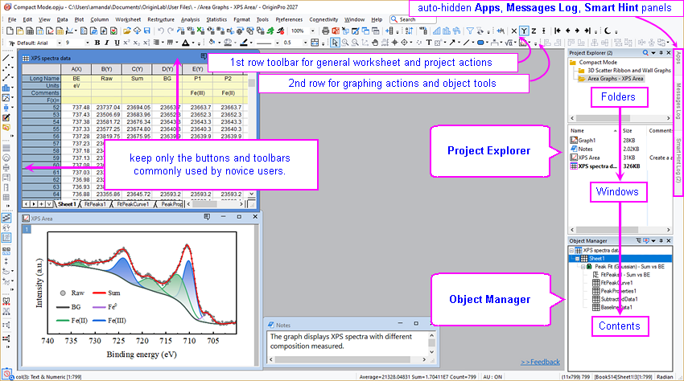
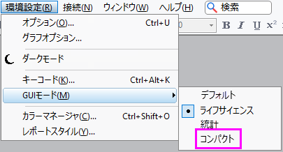

コンパクトモード
Compact-Mode
コンパクトモードとは？
コンパクトGUIモードはOrigin 2027で導入されました。Originのデフォルトインターフェースを簡素化し、ツールバーを統合するとともにドッキングパネルを再配置することで、ワークスペースの煩雑さやマウス移動を減らし、初心者でもよりスムーズに使い始められるようにします。

- 初心者が使用する機会が少ないボタンや、メニューから簡単にアクセスできるため場所を取るボタンを削減します（例：3D回転ボタン、フォルダとウィンドウツールバー、コードビルダおよびスクリプトウィンドウボタンなど）。
- また、ズームや再スケールボタンなど、一部のツールバーやボタンを再配置して、不要なマウス移動を減らし、作業を効率化します。
- プロジェクトエクスプローラとオブジェクトマネージャを右側に配置し、メインのワークスペースを左側のツールやメニューに隣接させるとともに、「フォルダ → ウィンドウ → コンテンツ」という分かりやすいプロジェクト階層を構成します。
- デフォルトでは、アプリ、メッセージログ、スマートヒントなどのユーティリティパネルは、ワークスペースを広く保つため折りたたまれています。
- よく使用する2D作図操作を優先し、3D作図ボタンを削除して2Dカラーマッププロットに置き換えています。また、よく使用する2Dプロットタイプの直後にグラフメーカーボタンを配置し、複数曲線/区分など一部のボタングループも整理されています。
コンパクトモードを有効にするには？
コンパクトモードは、インストール時に選択したモード（デフォルト、統計、またはライフサイエンスモード）に関係なくプリインストールされます。
- メニューから環境設定：GUIモード：コンパクトを選択
